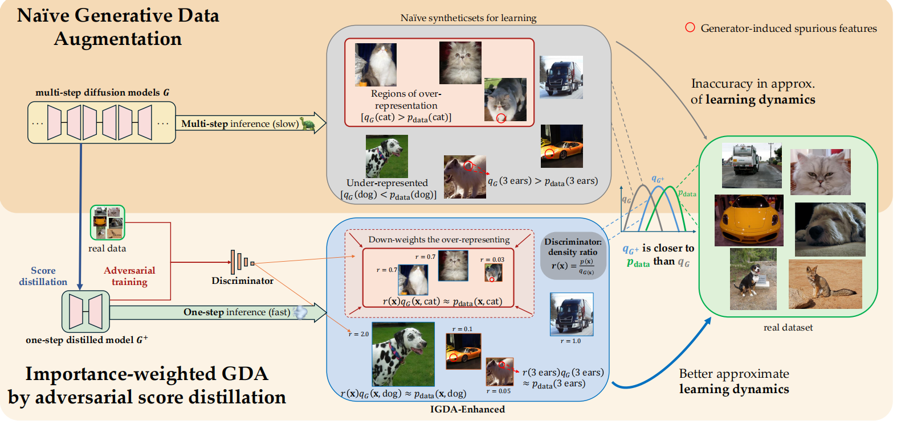
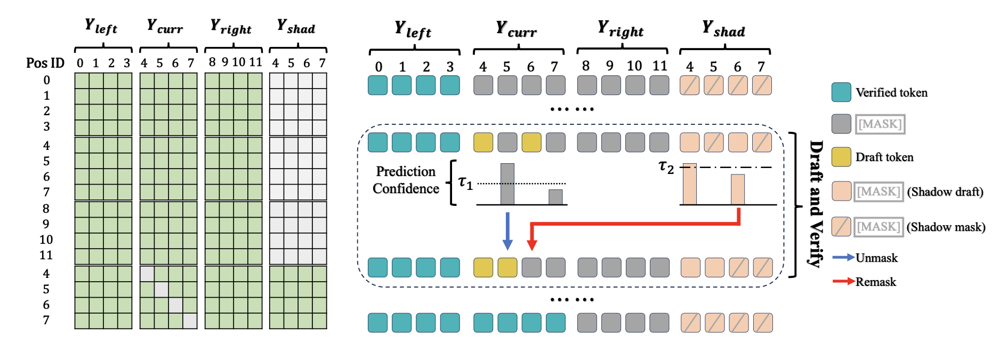

Research Interests
My research interests lie in generative models, especially diffusion models and representaion learning.
I want to explore:
(1) How can generative models, especially diffusion models and autoregressive models, achieve better and faster performance in various downstream tasks
(2) How to use the synthetic data produced by the generative model or the learned representations to assist in the process of representation learning
I am currently seeking a Ph.D. opportunity for Fall 2026 in computer science!
|
|

|
Generative Data Augmentation via Diffusion
Distillation, Adversarial Alignment, and Importance
Reweighting
Ruyi An*,
Haicheng Huang*,
Huangjie Zheng,
Mingyuan Zhou
NeurIPS, 2025
paper
We propose DAR-GDA, a three-stage augmentation pipeline that unites model **D**istillation, **A**dversarial alignment, and importance **R**eweighting that makes diffusion-quality augmentation both fast and optimized for improving downstream learning outcomes.
Our approach not only surpasses conventional non-foundation-model GDA baselines but also remarkably matches or exceeds the GDA performance of large, web-pretrained text-to-image models, despite using solely in-domain data.
|

|
Wide-In, Narrow-Out: Revokable Decoding for Efficient and Effective DLLMs
Feng Hong,
Geng YU,
Yushi Ye,
Haicheng Huang,
Huangjie Zheng,
Ya Zhang,
Yanfeng Wang,
Jiangchao Yao
In submission
we introduce Wide-In, Narrow-Out (WINO), a training-free decoding algorithm that enables revokable decoding in DLLMs.
WINO employs a parallel draft-and-verify mechanism, aggressively drafting multiple tokens while simultaneously using the model's bidirectional context to verify and re-mask suspicious ones for refinement.
|
The website is built upon this template.
|
|
{kind=link}